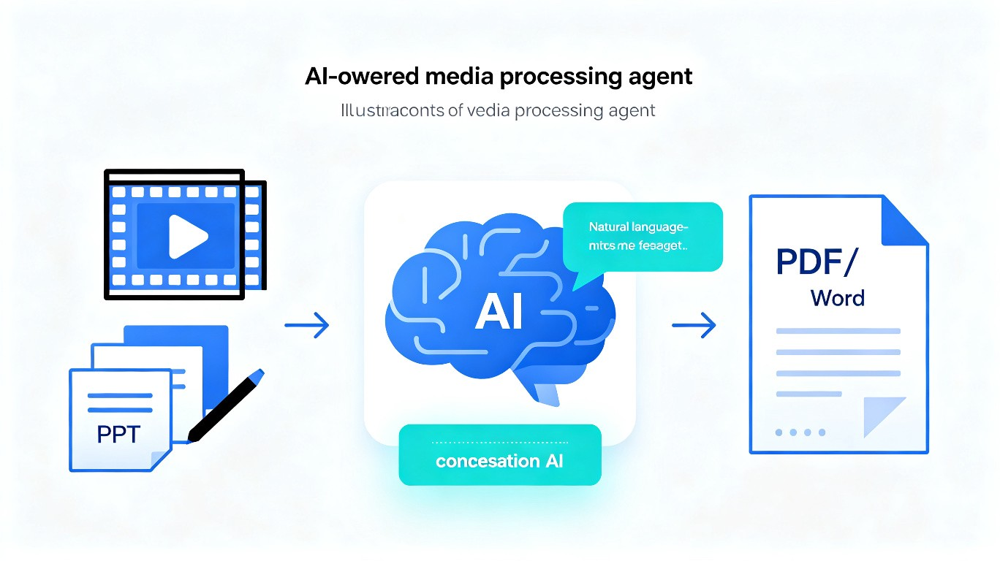

发现的问题
在教学和办公场景中，视频与文档处理是一个高频但痛苦的环节。教师录制课程后，视频常出现黑边、PPT 内容模糊；日常办公中 PDF 与 Word 转换操作繁琐。这些看似简单的问题，却因为工具分散、门槛高，消耗了大量不必要的时间和精力。
- 工具分散 — 视频处理用 ffmpeg/格式工厂，超分用专用 AI 模型，文档转换用另一个工具，来回切换效率极低
- 操作门槛高 — ffmpeg 需要记忆命令行参数（如 -vf crop,scale），格式工厂界面繁琐，非技术用户望而却步
- 无法理解意图 — 现有工具只能执行具体指令，无法理解"我想要什么效果"，用户必须自己判断该用什么参数
- 流程断裂 — 一个视频处理任务往往需要 3-5 个步骤、2-3 个软件配合，中间反复导入导出
解决方案：MediaFlow Agent
MediaFlow Agent 是一个基于 AI 大模型驱动的对话式智能 Agent（Web 应用）。用户只需上传视频或文档文件，然后在对话框中用自然语言描述需求，Agent 会自动理解意图、规划处理步骤、调用合适的工具链完成任务。
flowchart LR
U[用户] -->|自然语言描述| C[对话界面]
C -->|理解意图| L[AI 大模型]
L -->|规划任务链| K[知识库]
K -->|匹配工具| T[工具引擎]
T --> V[ffmpeg 视频处理]
T --> S[超分辨率模型]
T --> D[文档转换引擎]
T --> O[格式优化]
V --> R[处理结果]
S --> R
D --> R
O --> R
R --> U
智能视频处理
自动裁切黑边、调整分辨率、统一编码格式，一句话完成过去需要多个命令的操作
AI 超分辨率增强
针对视频中的 PPT 截图、文字区域进行智能超分辨率处理，让模糊内容清晰可读
文档格式转换
PDF 转 Word、Word 转 PDF、PPT 转图片等常见格式转换，对话即完成
知识库驱动决策
内置媒体处理知识库，AI 根据文件特征和处理需求自动选择最优参数和工具
典型使用场景
教师上传录课视频，说"帮我去掉两边的黑边，把 PPT 部分变清晰"，Agent 自动执行裁切 + 超分辨率增强
培训师上传多个视频，说"全部统一为 1920x1080 MP4 格式"，Agent 批量处理
办公人员上传 PDF，说"把这份 PDF 转成可编辑的 Word"，Agent 自动完成转换并下载
内容创作者说"把这几个视频压缩到 100MB 以内，保持清晰度"，Agent 自动计算最优码率
新旧方案对比
传统方式（现在）
- 打开格式工厂，选择裁切功能，手动框选黑边区域
- 单独打开超分软件，逐帧处理模糊区域
- 记忆 ffmpeg 命令行参数：-vf crop=1920:1080:0:0
- 手动在不同软件间切换、导入导出文件
- 整个过程耗时 10-30 分钟
MediaFlow Agent（未来）
- 上传视频，说"去掉黑边，PPT 变清晰"
- AI 自动识别黑边位置并裁切
- AI 自动识别文字/图表区域并超分增强
- 一键完成全流程，结果直接下载
- 整个过程仅需 1-2 分钟
核心价值
效率跃升
将视频/文档处理从多工具多步骤流程压缩为单次对话交互，处理时间从 10-30 分钟缩短至 1-2 分钟。
AI 时代交互革新
从"人适应工具"转变为"工具理解人"。大模型作为智能中间层，理解自然语言意图，自动规划执行路径，实现"说出来就做到"。
降低技术门槛
让不具备技术背景的教师和办公人员也能轻松完成专业级的视频处理，促进优质教学资源的产出效率。
目标用户
核心用户：高校教师、在线课程讲师、企业培训师、内容创作者、行政办公人员。
扩展用户：任何需要处理视频或文档格式转换，但不想学习复杂工具的日常用户。
技术方案概览
前端
对话式 Web 界面，支持文件拖拽上传、实时处理进度展示、结果预览与下载
AI 核心
大语言模型（LLM）负责意图理解与任务规划，知识库存储媒体处理最佳实践
工具引擎
ffmpeg 视频处理、Real-ESRGAN 超分辨率、LibreOffice 文档转换等开源工具链
部署
基于 TRAE IDE / TRAE Work 开发，云原生架构，支持弹性扩展